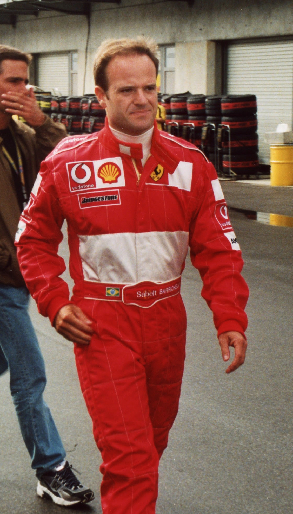

Rubens Barrichello ocupa um lugar especial na história do esporte brasileiro. Durante quase duas décadas na Fórmula 1, enfrentou diferentes gerações de pilotos, conduziu carros de seis equipes, participou de ciclos vitoriosos da Ferrari e da Brawn GP e construiu números que o colocam entre os competidores mais experientes da categoria.
O brasileiro disputou 322 largadas na Fórmula 1 entre 1993 e 2011. Foram 11 vitórias com 68 pódios. Barrichello também terminou duas temporadas como vice-campeão mundial, em 2002 e 2004, ambas pela Ferrari. Durante anos, foi o recordista absoluto de corridas disputadas na categoria, uma marca que simbolizava não apenas longevidade, mas capacidade de adaptação.
Da infância perto de Interlagos ao sonho da Fórmula 1
Nascido em São Paulo, em 23 de maio de 1972, Rubens Gonçalves Barrichello cresceu cercado pelo automobilismo. A proximidade da família com o Autódromo de Interlagos ajudou a alimentar uma ligação que atravessaria toda a sua carreira.
Rubinho começou no kart ainda criança e rapidamente se tornou um dos principais talentos brasileiros de sua geração. A evolução nas categorias de base abriu o caminho para a Europa, etapa praticamente obrigatória para quem desejava chegar à Fórmula 1. Barrichello passou pelos monopostos europeus, chamou a atenção pela velocidade e chegou à principal categoria em 1993, contratado pela Jordan.
A estreia aconteceu no Grande Prêmio da África do Sul. Embora a Jordan ainda não estivesse entre as equipes capazes de disputar vitórias regularmente, ele mostrou desde o início que poderia extrair mais do carro, especialmente em classificações e corridas disputadas em condições instáveis.
O crescimento na Jordan
A temporada de 1994 foi decisiva para a consolidação de Barrichello na Fórmula 1. No Grande Prêmio do Pacífico, disputado no Japão, ele terminou em terceiro e conquistou o primeiro pódio de sua carreira. Também foi o primeiro pódio da história da Jordan.
Meses depois, conseguiu outro feito marcante. Em uma classificação com pista molhada e condições variáveis, colocou a Jordan na pole position para o Grande Prêmio da Bélgica, em Spa-Francorchamps. Aos 22 anos, tornou-se um dos pilotos mais jovens a conquistar uma pole na Fórmula 1 naquele período.
O ano também teve um dos momentos mais difíceis de sua trajetória. Barrichello sofreu um forte acidente nos treinos do fim de semana do Grande Prêmio de San Marino, em Ímola. O episódio aconteceu dois dias antes da morte de Ayrton Senna, piloto que servia como referência e mentor para Rubinho.
Permaneceu na Jordan até 1996. Mesmo sem um carro para lutar constantemente pelas primeiras posições, somou resultados importantes e consolidou a reputação de piloto veloz, técnico e eficiente em situações difíceis.
A passagem pela Stewart e a chegada à Ferrari
Em 1997, Rubens Barrichello iniciou uma nova etapa ao assinar com a Stewart, equipe criada pelo tricampeão mundial Jackie Stewart. O projeto ainda estava em seus primeiros anos, mas oferecia ao brasileiro a oportunidade de participar diretamente do desenvolvimento do carro.
O primeiro grande resultado veio no caótico Grande Prêmio de Mônaco de 1997. Debaixo de chuva, Barrichello terminou em segundo lugar. Em 1999, viveu sua temporada mais consistente antes de chegar à Ferrari, conquistando três pódios e ajudando a Stewart a alcançar sua melhor campanha na Fórmula 1.
O desempenho chamou a atenção da equipe mais tradicional do campeonato. Em 2000, Rubinho foi contratado pela Ferrari para ser companheiro de Michael Schumacher.
A parceria colocou Barrichello no centro de um dos períodos mais dominantes da história da Fórmula 1. Entre 2000 e 2005, o brasileiro conquistou nove vitórias e 55 pódios pela escuderia italiana. Também ajudou a Ferrari a conquistar cinco títulos consecutivos do Mundial de Construtores entre 2000 e 2004.
A primeira vitória na Fórmula 1
O primeiro lugar mais emocionante da carreira de Rubinho aconteceu no Grande Prêmio da Alemanha de 2000, no antigo traçado de Hockenheim.
Problemas elétricos durante a classificação deixaram Barrichello apenas na 18ª posição do grid. A possibilidade de vitória parecia remota, mas o brasileiro iniciou uma recuperação impressionante. Fez ultrapassagens, aproveitou as entradas do safety car e se manteve competitivo durante as mudanças climáticas.
Quando a chuva começou a atingir parte do circuito, Barrichello decidiu permanecer com pneus para pista seca. A escolha exigiu controle, sensibilidade e coragem. Rubinho conseguiu administrar o carro nas áreas molhadas e aproveitar o asfalto seco em outros pontos da pista.
Depois de 124 participações em Grandes Prêmios, Barrichello cruzou a linha de chegada na primeira posição. Chorou dentro do carro, levou a bandeira brasileira ao pódio e tornou-se o primeiro piloto do país a vencer na Fórmula 1 desde Ayrton Senna, em 1993.
Ferrari, Schumacher e as ordens de equipe
A passagem pela Ferrari também foi marcada pela convivência com o piloto alemão, que era o centro do projeto esportivo da escuderia e protagonizou uma das maiores sequências de domínio já vistas na categoria.
Barrichello teve papel fundamental nesse período. Além de vencer corridas, contribuía no desenvolvimento dos carros, somava pontos para o campeonato de construtores e frequentemente ocupava posições que impediam os adversários de se aproximar de Schumacher.
A relação de hierarquia dentro da Ferrari, porém, produziu momentos controversos. O mais famoso aconteceu no Grande Prêmio da Áustria de 2002. Barrichello dominou o fim de semana e liderou praticamente toda a prova, mas recebeu a ordem para entregar a vitória a Schumacher. O brasileiro reduziu a velocidade perto da linha de chegada, deixando clara a inversão de posições.
A decisão provocou vaias, críticas internacionais e um enorme desgaste para a Ferrari. O episódio tornou-se um dos maiores símbolos do debate sobre ordens de equipe na história da Fórmula 1.
Apesar da controvérsia, 2002 foi uma das melhores temporadas de Barrichello. Ele venceu quatro corridas, subiu dez vezes ao pódio e terminou o campeonato como vice-líder. Em 2004, novamente foi o segundo colocado do Mundial, desta vez com duas vitórias, 14 pódios e quatro pole positions.
As grandes atuações pela Ferrari
Rubinho não foi apenas um piloto que aproveitou a superioridade dos carros da Ferrari. Algumas de suas vitórias exigiram atuações individuais de altíssimo nível.
Além da recuperação histórica em Hockenheim, brilhou no Grande Prêmio da Grã-Bretanha de 2003. Depois de largar na pole, enfrentou uma corrida caótica em Silverstone e protagonizou uma intensa disputa com Kimi Räikkönen. Barrichello recuperou posições, assumiu a liderança e venceu uma das provas mais celebradas de sua carreira.
Em 2004, venceu o Grande Prêmio da Itália, em Monza, e a primeira edição do Grande Prêmio da China, em Xangai. O triunfo chinês representou a nona e última vitória do brasileiro pela Ferrari.
As 11 vitórias de Barrichello na Fórmula 1
- GP da Alemanha de 2000 — Ferrari
- GP da Europa de 2002 — Ferrari
- GP da Hungria de 2002 — Ferrari
- GP da Itália de 2002 — Ferrari
- GP dos Estados Unidos de 2002 — Ferrari
- GP da Grã-Bretanha de 2003 — Ferrari
- GP do Japão de 2003 — Ferrari
- GP da Itália de 2004 — Ferrari
- GP da China de 2004 — Ferrari
- GP da Europa de 2009 — Brawn GP
- GP da Itália de 2009 — Brawn GP
Das 11 vitórias, nove foram conquistadas com a Ferrari e duas com a Brawn GP. A primeira aconteceu em Hockenheim, em 2000, e a última em Monza, em 2009.
Honda, Brawn GP e a última disputa pelo título
Barrichello deixou a Ferrari ao fim de 2005 e assinou com a Honda. O projeto tinha grande investimento, mas enfrentou dificuldades para acompanhar as equipes de ponta. Um dos melhores resultados do brasileiro nesse período foi o terceiro lugar no Grande Prêmio da Grã-Bretanha de 2008, disputado sob chuva em Silverstone.
No encerramento daquela temporada, a Honda anunciou sua saída da Fórmula 1. A equipe esteve perto de desaparecer, mas foi adquirida por Ross Brawn e transformada na Brawn GP.
O carro de 2009 nasceu extremamente competitivo. Jenson Button venceu seis das primeiras sete corridas e abriu uma grande vantagem no campeonato. Barrichello enfrentou dificuldades na primeira parte do ano, mas reagiu durante a temporada.
Rubinho venceu o Grande Prêmio da Europa, em Valência, encerrando um jejum de quase cinco anos sem vitórias. Poucas semanas depois, ganhou novamente em Monza, liderando uma dobradinha da Brawn GP. O brasileiro chegou à reta final ainda com possibilidades de título, mas Button confirmou a conquista no Grande Prêmio do Brasil. Barrichello terminou o campeonato em terceiro, enquanto a Brawn foi campeã entre os construtores.
Williams e a despedida da Fórmula 1
As duas últimas temporadas foram disputadas pela Williams, em 2010 e 2011. O brasileiro foi contratado pela experiência e capacidade de auxiliar no desenvolvimento técnico.
A Williams já não vivia seus anos de domínio, mas Rubinho conseguiu pontuar e participar da reconstrução da equipe. Sua última largada aconteceu no Grande Prêmio do Brasil de 2011, encerrando uma trajetória de 19 temporadas na categoria.
A relação intensa com Interlagos
O circuito mais simbólico da carreira de Barrichello. O brasileiro conquistou três pole positions em casa, mas enfrentou uma sequência impressionante de problemas mecânicos, acidentes e oportunidades perdidas.
Entre 1995 e 2003, Rubinho abandonou oito edições consecutivas da prova. Em 2003, viveu uma das maiores frustrações: liderava o Grande Prêmio do Brasil quando ficou sem combustível. Seu único pódio na corrida aconteceu em 2004, com a terceira colocação.
Apesar dos resultados dolorosos, Barrichello tornou-se uma figura inseparável do circuito paulistano. Sua trajetória está diretamente ligada à história do Grande Prêmio de Fórmula 1 em Interlagos, palco de sonhos, frustrações, despedidas e títulos conquistados posteriormente em outras categorias.
A carreira depois da Fórmula 1
A saída do principal categoria da modalidade não representou aposentadoria. Barrichello disputou a IndyCar em 2012 e participou das 500 Milhas de Indianápolis, uma das corridas mais tradicionais do automobilismo mundial.
Na sequência, construiu uma nova fase de sucesso no Brasil. Rubinho estreou na Stock Car no fim de 2012 e realizou sua primeira temporada completa no ano seguinte. Em 2014, conquistou o título da categoria. Oito anos depois, voltou a ser campeão, levantando a taça de 2022 em Interlagos.
Os títulos mostraram que sua carreira não poderia ser resumida à condição de companheiro de Michael Schumacher. Barrichello conseguiu se adaptar a carros de turismo, corridas com estratégias diferentes e um ambiente extremamente competitivo.
Os números de Rubens Barrichello na Fórmula 1
- Temporadas: 19
- Largadas: 322
- Vitórias: 11
- Pódios: 68
- Pole positions: 14
- Voltas mais rápidas: 17
- Melhor posição no campeonato: vice-campeão em 2002 e 2004
- Vitórias pela Ferrari: 9
- Vitórias pela Brawn GP: 2
- Equipes: Jordan, Stewart, Ferrari, Honda, Brawn GP e Williams
A ausência de um título mundial na carreira de Rubens Barrichello não pode ser explicada apenas por falta de talento ou por uma suposta incapacidade de competir no mais alto nível. A trajetória do brasileiro reuniu três fatores decisivos: passou grande parte da carreira sem um carro capaz de lutar pelo campeonato, encontrou Michael Schumacher no auge justamente quando chegou à equipe mais forte do grid e, anos depois, perdeu outra oportunidade real para um companheiro que aproveitou melhor o início dominante da Brawn GP.
Rubinho também carregou um peso que não aparecia nas tabelas de classificação. Depois da morte de Ayrton Senna, em 1º de maio de 1994, Barrichello passou a ser tratado como a principal esperança brasileira na Fórmula 1. Ele tinha apenas 21 anos, disputava sua segunda temporada e havia sofrido um gravíssimo acidente no mesmo fim de semana em Ímola. De uma hora para outra, deixou de ser apenas um jovem talento em formação e passou a conviver com comparações frequentes com um tricampeão que já era um dos maiores ídolos da história do país.
A cobrança era desproporcional ao momento de sua carreira. Senna havia conquistado títulos, vitórias históricas e uma relação praticamente única com o público brasileiro. Barrichello, por sua vez, ainda pilotava pela Jordan, equipe que não tinha condições técnicas de enfrentar regularmente Williams, Benetton, Ferrari e McLaren. Mesmo assim, cada classificação, abandono ou erro passou a ser avaliado como se Rubinho tivesse a obrigação de ocupar imediatamente o espaço deixado por Senna.
Essa comparação acompanhou o piloto durante anos. Barrichello tornou-se o brasileiro mais presente na Fórmula 1 após a morte de Senna, mas precisou construir sua própria história em um ambiente no qual vitórias eram frequentemente tratadas como obrigação e derrotas ganhavam uma dimensão muito maior. O apelido carinhoso “Rubinho” também foi usado de forma depreciativa em determinados momentos, principalmente quando o piloto não conseguia superar Schumacher ou enfrentava problemas no Grande Prêmio do Brasil.
O cenário esportivo mudou quando Barrichello chegou à Ferrari, em 2000. Pela primeira vez, o brasileiro passou a ter um carro com potencial para vencer corridas e disputar campeonatos. O problema era que a escuderia havia sido reorganizada ao redor de Michael Schumacher. O alemão era o grande projeto da equipe, participava da reconstrução iniciada nos anos anteriores e tinha prioridade estratégica na luta pelo Mundial.
A Ferrari não escondia que Schumacher era o primeiro piloto. Barrichello podia vencer quando as circunstâncias permitiam, mas sua função também envolvia proteger o companheiro, tirar pontos dos adversários e cumprir decisões tomadas pela equipe.
Um dos primeiros episódios explícitos aconteceu no Grande Prêmio da Áustria de 2001. David Coulthard venceu a corrida e Barrichello estava em segundo, à frente de Schumacher. Nas voltas finais, a Ferrari determinou que o brasileiro cedesse a posição. Rubinho resistiu às primeiras mensagens, mas abriu passagem perto da chegada, permitindo que o alemão terminasse em segundo e somasse pontos importantes na disputa pelo campeonato. Barrichello cruzou a linha em terceiro.
Por uma coincidência marcante, o episódio mais controverso aconteceria exatamente no mesmo Grande Prêmio da Áustria, no mesmo circuito, apenas um ano depois. Em 2002, Barrichello conquistou a pole position, controlou a prova e caminhava para uma vitória incontestável. Mesmo assim, recebeu novamente a ordem de deixar Schumacher passar. O brasileiro esperou até os metros finais da última volta e reduziu a velocidade diante da linha de chegada, expondo publicamente a inversão. Michael venceu por apenas 0,182 segundo.
Assim, o GP da Áustria tornou-se o principal símbolo da hierarquia existente na Ferrari. Em 2001, Rubinho foi obrigado a entregar o segundo lugar ao companheiro. Em 2002, no mesmo palco e pelo segundo ano consecutivo, precisou ceder uma vitória que havia construído desde a pole position.
A decisão de 2002 provocou vaias no A1-Ring e enorme repercussão internacional. Constrangido, Schumacher colocou Barrichello no lugar mais alto do pódio e entregou ao brasileiro o troféu de vencedor. Ferrari e pilotos foram multados pela quebra do protocolo da cerimônia, não pela ordem de equipe, que ainda era permitida pelo regulamento.
A ordem foi especialmente criticada porque ocorreu apenas na sexta etapa de uma temporada amplamente dominada pela Ferrari. Schumacher já havia vencido quatro das cinco primeiras corridas e terminaria campeão com enorme antecedência. Por isso, a troca de posições pareceu desnecessária para boa parte do público e transformou Barrichello no símbolo de uma estrutura esportiva montada para maximizar os resultados do alemão.
É importante, porém, não reduzir toda a diferença entre os dois pilotos às ordens da Ferrari. Schumacher também foi mais rápido e regular em grande parte daquele período. Em 2002, o alemão venceu 11 corridas e terminou todas as provas no pódio, enquanto Barrichello conquistou quatro vitórias e foi vice-campeão. Em 2004, Michael ganhou 13 etapas e Rubinho venceu duas. O favorecimento existiu e limitou a liberdade competitiva do brasileiro, mas não é possível afirmar que Barrichello teria sido campeão simplesmente com tratamento igualitário. Os números mostram que Schumacher viveu uma fase extraordinária e aproveitou melhor o carro dominante.
Rubinho também recebeu oportunidades de vitória quando o campeonato já estava encaminhado. No Grande Prêmio dos Estados Unidos de 2002, Schumacher diminuiu o ritmo na chegada em uma tentativa de cruzar lado a lado com o companheiro. Barrichello acabou vencendo por apenas 0,011 segundo, uma das menores diferenças registradas na história da categoria. O resultado foi visto por muitos como uma espécie de compensação após a controvérsia da Áustria, embora não apagasse a condição hierárquica que marcou a temporada.
A última grande oportunidade de Barrichello surgiu em 2009, na Brawn GP. O carro começou a temporada muito acima dos concorrentes, mas Jenson Button aproveitou melhor essa vantagem e venceu seis das sete primeiras corridas. Rubinho cresceu na segunda metade do campeonato, ganhou em Valência e Monza e chegou às etapas finais ainda com possibilidades matemáticas, mas a vantagem construída pelo inglês foi suficiente. Button ficou com o título, enquanto Barrichello terminou em terceiro.
Assim, Rubens Barrichello nunca foi campeão por uma combinação de contexto, hierarquia e desempenho. Ele demorou a receber um carro realmente vencedor; quando recebeu, encontrou uma Ferrari dedicada ao projeto de Michael Schumacher; e, quando voltou a ter uma oportunidade na Brawn, perdeu terreno demais no início da temporada.
O peso de representar o Brasil depois de Senna tornou essa história ainda mais dura. Rubinho não precisou apenas enfrentar adversários dentro da pista. Também correu contra uma expectativa nacional construída a partir de um piloto irrepetível.
O legado para o automobilismo brasileiro
Rubens Barrichello representa uma combinação rara de velocidade, conhecimento técnico, resistência emocional e longevidade. Competiu contra campeões de diferentes gerações, sobreviveu a transformações profundas nos carros e regulamentos e permaneceu relevante por quase duas décadas na Fórmula 1.
Seu legado também passa pela forma como demonstrava emoção. Rubinho chorava nas vitórias, dividia suas frustrações e mantinha uma relação direta com os torcedores. Essa característica o tornou um dos pilotos brasileiros mais populares, mesmo enfrentando cobranças intensas durante os anos de Ferrari.
Barrichello não conquistou o Mundial de Fórmula 1, mas construiu uma carreira que vai muito além desse detalhe. Foi vencedor, vice-campeão, peça importante em equipes campeãs e protagonista de algumas das corridas mais memoráveis de sua geração. Depois, voltou ao Brasil e provou sua competitividade com dois títulos da Stock Car.
A história de Rubinho é a história de um piloto que nunca deixou de acelerar. Entre vitórias emocionantes, decisões controversas, recordes de longevidade e conquistas em diferentes categorias, Rubens Barrichello garantiu definitivamente seu espaço entre os maiores nomes do automobilismo brasileiro.